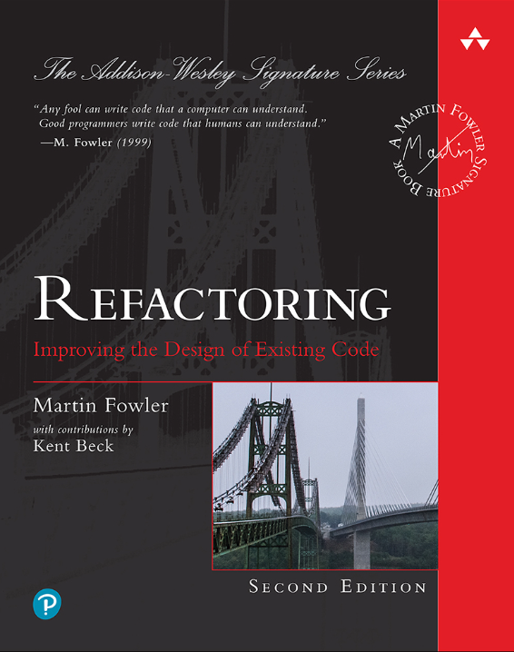

classDiagram
class Grid{
+ nx
+ dx
+ ny
+ dy
+ find_index()
}
class ItemInfo{
+ name
+ type
+ unit
}
class DataArray{
+ data
+ time
+ item
+ geometry
+ plot()
}
DataArray --* Grid
DataArray --* ItemInfo
Object oriented design in Python
Object oriented programming (OOP)
Benefits of object oriented design:
- Encapsulation
- Code reuse (composition, inheritance)
- Abstraction
OOP terminology
| Term | Meaning | Example |
|---|---|---|
| Class | Blueprint for objects | class Location: ... |
| Instance | Concrete object created from a class | loc = Location("Antwerp") |
| Instance variable | Data stored per object | self.name = name |
| Attribute | Anything accessed with dot notation | loc.name, loc.plot() |
| Method | Function defined inside a class | def plot(self): ... |
| Property | Managed attribute using @property |
@property def name(self): ... |
| Encapsulation | Hide internal details; provide safe interface | Use _var + property |
Encapsulation
Encapsulation - Managed attributes
class Location:
def __init__(self, name, longitude, latitude):
self._name = name.upper() # Names are always uppercase
...
@property
def name(self):
return self._name
@name.setter
def name(self, value):
self._name = value.upper()
>>> loc = Location("Antwerp", 4.42, 51.22)
>>> loc.name = "Antwerpen"
>>> loc.name
"ANTWERPEN" 😊Composition
Composition in object oriented design is a way to combine objects or data types into more complex objects.
Composition - Example
class Grid:
def __init__(self, nx, dx, ny, dy):
self.nx = nx
self.dx = dx
self.ny = ny
self.dy = dy
def find_index(self, x,y):
...
class DataArray:
def __init__(self, data, time, item, geometry):
self.data = data
self.time = time
self.item = item
self.geometry = geometry
def plot(self):
.... . .
DataArray has a geometry (e.g. Grid) and an item (ItemInfo).
Inheritance
- Inheritance is a way to reuse code and specialize behavior.
- A child class inherits the attributes and methods from the parent class.
- A child class can override the methods of the parent class.
- A child class can add new methods.
Inheritance - Example
classDiagram
class Shape {
+color
+describe()
+area()*
}
class Circle {
+radius
+area()
}
class Rectangle {
+width
+height
+area()
}
Shape <|-- Circle
Shape <|-- Rectangle
import math
class Shape:
def __init__(self, color="black"):
self.color = color
def describe(self):
return f"A {self.color} shape with area = {self.area():.2f}"
def area(self):
raise NotImplementedError
class Circle(Shape):
def __init__(self, radius, color="black"):
super().__init__(color)
self.radius = radius
def area(self):
return math.pi * self.radius ** 2
class Rectangle(Shape):
def __init__(self, width, height, color="black"):
super().__init__(color)
self.width = width
self.height = height
def area(self):
return self.width * self.height. . .
shapes = [
Circle(1.0, color="red"),
Rectangle(2.0, 3.0, color="blue")
]
for shape in shapes:
print(shape.describe())A red shape with area = 3.14
A blue shape with area = 6.00Composition vs inheritance
Composition: a car has a wheel.
Inheritance: a sports car is a car.
- Inheritance is used to specialize behavior.
- In most cases, composition is a better choice than inheritance.
- Some recent programming languages (e.g. Go & Rust) do not support this style of inheritance.
- Use inheritance only when it makes sense.
Abstraction
Version A
total = 0.0
for x in values:
total = total +xVersion B
total = sum(values)- Using functions, e.g.
sum()allows us to operate on a higher level of abstraction. - Too little abstraction will force you to write many lines of boiler-plate code
- Too much abstraction limits the flexibility
- ✨Find the right level of abstraction!✨
- Which version is easiest to understand?
- Which version is easiest to change?
Collections Abstract Base Classes
classDiagram
Container <|-- Collection
Sized <|-- Collection
Iterable <|-- Collection
class Container{
__contains__(self, x)
}
class Sized{
__len__(self)
}
class Iterable{
__iter__(self)
}
- If a class implements
__len__it is aSizedobject. - If a class implements
__contains__it is aContainerobject. - If a class implements
__iter__it is aIterableobject.
Collections Abstract Base Classes
Collections Abstract Base Classes
classDiagram
Container <|-- Collection
Sized <|-- Collection
Iterable <|-- Collection
Collection <|-- Sequence
Collection <|-- Set
Sequence <|-- MutableSequence
Mapping <|-- MutableMapping
Collection <|-- Mapping
MutableSequence <|-- List
Sequence <|-- Tuple
MutableMapping <|-- Dict
Pythonic
If you want your code to be Pythonic, you have to be familiar with these types and their methods.
Dundermethods:
__getitem____setitem____len____contains__- …
from collections.abc import Collection
class Tool:
...
class Hammer(Tool):
name="hammer"
class Screwdriver(Tool):
name="screwdriver"class JavaLikeToolbox:
def __init__(self, tools: Collection[Tool]) -> None:
self.tools = tools
def getToolByName(self, name: str) -> Tool:
for tool in self.tools:
if tool.name == name:
return tool
def numberOfTools(self) -> int:
return len(self.tools)
tb = JavaLikeToolbox([Hammer(), Screwdriver()])
tb.getToolByName("hammer")<__main__.Hammer at 0x7fb72077d940>tb.numberOfTools()2class Toolbox:
def __init__(self, tools: Collection[Tool]):
self._tools = {tool.name: tool for tool in tools}
def __getitem__(self, name: str) -> Tool:
return self._tools[name]
def __len__(self) -> int:
return len(self._tools)
tb = Toolbox([Hammer(), Screwdriver()])
tb["hammer"]<__main__.Hammer at 0x7fb720804910>len(tb)2You want your code to feel like the built-in types.
class SparseMatrix:
def __init__(self, shape, fill_value=0.0, data=None):
self.shape = shape
self._data = data if data is not None else {}
self.fill_value = fill_value
def __setitem__(self, key, value):
i,j = key
self._data[i,j] = float(value)
def __getitem__(self, key) -> float:
i,j = key
return self._data.get((i,j), self.fill_value)
def transpose(self) -> "SparseMatrix":
data = {(j,i) : v for (i,j),v in self._data.items()}
return SparseMatrix(data=data,
shape=self.shape,
fill_value=self.fill_value)
def __repr__(self):
matrix_str = ""
for j in range(self.shape[1]):
for i in range(self.shape[0]):
value = self[i, j]
matrix_str += f"{value:<4}"
matrix_str += "\n"
return matrix_strm = SparseMatrix(shape=(2,2), fill_value=0.0)
m0.0 0.0
0.0 0.0 . . .
m[0,1]0.0. . .
m[0,1] = 1.0
m[1,0] = 2.0
m0.0 2.0
1.0 0.0 . . .
m.transpose()0.0 1.0
2.0 0.0 Duck typing
- “If it walks like a duck and quacks like a duck, it’s a duck”
- From the perspective of the caller, it doesn’t matter if it is a rubber duck or a real duck.
- The type of the object is not important, as long as it has the right methods.
- Python is different than C# or Java, where you would have to create an interface
IToolboxand implement it forToolbox.
import math
class Circle: # no base class
def __init__(self, radius, color="black"):
self.radius = radius
self.color = color
def area(self):
return math.pi * self.radius**2
def describe(self):
return f"A {self.color} circle with area = {self.area():.2f}"
class Rectangle: # no base class
def __init__(self, width, height, color="black"):
self.width = width
self.height = height
self.color = color
def area(self):
return self.width * self.height
def describe(self):
return f"A {self.color} rectangle with area = {self.area():.2f}". . .
shapes = [
Circle(1.0, color="red"),
Rectangle(2.0, 3.0, color="blue")
]
for shape in shapes:
print(shape.describe())A red circle with area = 3.14
A blue rectangle with area = 6.00Duck typing - Example
An example is a Scikit learn transformers
fittransformfit_transform
If you want to make a transformer compatible with sklearn, you have to implement these methods.
Duck typing - Example
class PositiveNumberTransformer:
def fit(self, X, y=None):
# no need to fit (still need to have the method!)
return self
def transform(self, X):
return np.abs(X)
def fit_transform(self, X, y=None):
return self.fit(X, y).transform(X)Duck typing - Mixins
We can inherit some behavior from sklearn.base.TransformerMixin
from sklearn.base import TransformerMixin
class RemoveOutliersTransformer(TransformerMixin):
def __init__(self, lower_bound, upper_bound):
self.lower_bound = lower_bound
self.upper_bound = upper_bound
self.lower_ = None
self.upper_ = None
def fit(self, X, y=None):
self.lower_ = np.quantile(X, self.lower_bound)
self.upper_ = np.quantile(X, self.upper_bound)
def transform(self, X):
return np.clip(X, self.lower_, self.upper_)
# def fit_transform(self, X, y=None):
# we get this for free, from TransformerMixinLet’s revisit the (date) Interval
The Interval class represent an interval in time.
. . .
What if we want to make another type of interval, e.g. a interval of numbers \([1.0, 2.0]\)?
A number interval
. . .
As long as the start, end and x are comparable, the Interval class is a generic class able to handle integers, floats, dates, datetimes, strings …
Postel’s law
a.k.a. the Robustness principle of software design
- Be liberal in what you accept
- Be conservative in what you send
. . .
def process(number: Union[int,str,float]) -> int:
# make sure number is an int from now on
number = int(number)
result = number * 2
return result . . .
The consumers of your package (future self), will be grateful if you are not overly restricitive in what types you accept as input.
Example - Pydantic
from pydantic import BaseModel
from datetime import date
class Sensor(BaseModel):
name: str
voltage: float
install_date: date
location: tuple[float, float]
s1 = Sensor(name="Sensor 1",
voltage=3.3,
install_date=date(2020, 1, 1),
location=(4.42, 51.22))
s1Sensor(name='Sensor 1', voltage=3.3, install_date=datetime.date(2020, 1, 1), location=(4.42, 51.22))data = {
"name": "Sensor 1",
"voltage": "3.3",
"install_date": "2020-01-01",
"location": ("4.42", "51.22")
}
s2 = Sensor(**data)
s2Sensor(name='Sensor 1', voltage=3.3, install_date=datetime.date(2020, 1, 1), location=(4.42, 51.22))Refactoring
- Refactoring is a way to improve the design of existing code
- Changing a software system in such a way that it does not alter the external behavior of the code, yet improves its internal structure
- Refactoring is a way to make code more readable and maintainable
- Housekeeping
Common refactoring techniques:
- Extract method
- Extract variable
- Rename method
- Rename variable
- Rename class
- Inline method
- Inline variable
- Inline class
Rename variable
Before
n = 0
for v in y:
if v < 0:
n = n + 1. . .
After
FREEZING_POINT = 0.0
n_freezing_days = 0
for temp in daily_max_temperatures:
if temp < FREEZING_POINT:
n_freezing_days = n_freezing_days + 1 Extract variable
Before
def predict(x):
return min(0.0, 0.5 + 2.0 * min(0,x) + (random.random() - 0.5) / 10.0). . .
After
def predict(x):
scale = 10.0
error = (random.random() - 0.5) / scale
a = 0.5
b = 2.0
draft = a + b * x + error
return min(0.0, draft)Extract method
def error(scale):
return (random.random() - 0.5) / scale
def linear_model(x, *, a=0.0, b=1.0):
return a + b * x
def clip(x, *, min_value=0.0):
return min(min_value, x)
def predict(x):
draft = linear_model(x, a=0.5, b=2.0) + error(scale=10.0)
return clip(draft, min_value=0.)Inline method
Opposite of extract mehtod.
Composed method
Break up a long method into smaller methods.
# get data
os.shutil.copyfile(thisfile, localfile)
df = read_csv(localfile)
# clean data
df.dropna()
df.drop_duplicates()
df[somevar<0.0] = 0.0
# transform data
df.date = pd.to_datetime(df.date) - 86400
# predict
predictions = df.height + df.weight * df.age
def get_data(filename,...):
...
def clean_data(df):
...
def transform_data(df):
...
def predict(df):
...
def main():
df = get_data("raw_data.csv")
cleaned_data = clean_data(df)
final_data = transform_data(cleaned_data)
predictions = predict(final_data)Composed method
- Divide your program into methods that perform one identifiable task
- Keep all of the operations in a method at the same level of abstraction.
- This will naturally result in programs with many small methods, each a few lines long.
- When you use Extract method a bunch of times on a method the original method becomes a Composed method.

If you want to learn more about refactoring, I recommend the book “Refactoring: Improving the Design of Existing Code” by Martin Fowler.
Summary
- OOP helps organize code into classes and objects
- Key principles: encapsulation, composition, inheritance, abstraction
- Duck typing – focus on behavior, not type
- Postel’s Law – be liberal in what you accept, strict in what you return
- Refactoring – improve design without changing behavior